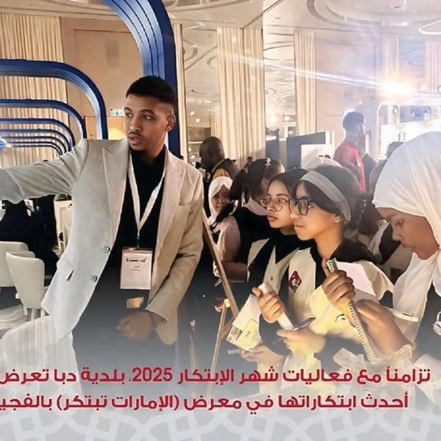
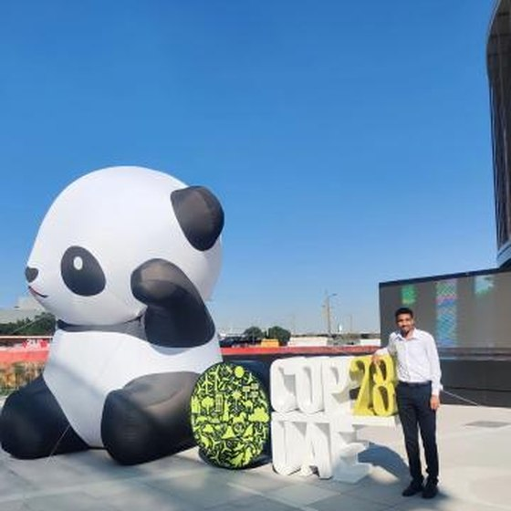
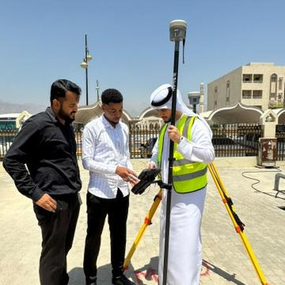
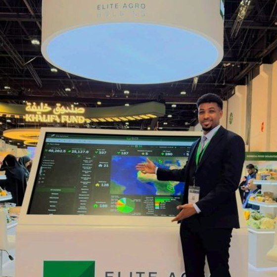

About
Senior GIS Analyst specializing in Geospatial Intelligence, Remote Sensing, Cartography, and AI-powered spatial analytics. Transforming complex spatial data into actionable insights and intelligent solutions that drive smarter decisions.
Senior GIS Analyst & Lead GIS Solutions Architect
Personal Information
- Nationality: Sudanese
- Phone: +971 55351242 - +249 920097574
- City: Abu Dhabi, UAE
- Place and date of birth: Khartoum
- Degree: BS.c
- Email: Alkamelgis@gmail.com
- Freelance: Available
Senior GIS Analyst and Remote Sensing specialist with 10 years of experience in enterprise GIS, spatial analysis, remote sensing, geodatabase management, and cartographic design across agriculture, utilities, public health, and urban planning.
Currently Senior GIS Analyst and Lead GIS Solutions Architect, I design and develop advanced geospatial solutions, translate business requirements into technical GIS workflows, and apply spatial analytics to support operational planning and strategic decision-making. Core technical expertise: ArcGIS Pro, ArcGIS Enterprise, Python/ArcPy, FME, CAD/BIM integration, AI-powered geospatial technologies (GeoAI), and enterprise GIS architecture.
As founder of AgroCloud and GeoSyntra, I lead the development of Geo-AI platforms that combine satellite imagery, artificial intelligence, and geospatial data to strengthen agricultural intelligence, resource management, and decision-making across multiple sectors.
PMP-certified, I combine technical GIS and remote sensing expertise with strategic thinking and a commitment to innovation. My career goal is to progress into GIS management and enterprise leadership — leading high-impact geospatial initiatives, strengthening organizational GIS capabilities, advancing digital transformation, and supporting national strategic plans.
Resume
Sumary
MOHAMED ALKAMEL
Web designI have highly GIS skilled at improving productivity through creating and implementing more efficient work processes. and I Can Provide Ability to adapt GIS technical skills and personnel management experience to successfully execute broad-ranging client projects..
Education
B.Sc. GIS , Cartography and Remote Sensing
2012 - 2017
FGES University of Khartoum
Honours Degree.
Diploma Geographic Information Systems (GIS) Specialization
2017 - 2018
US Davis, California
Map Your World With GIS. Explore the tools, concepts, and terminology of spatial analysis and modeling
coursera.org/verify/specialization/76V4XTPF7584
Certifications
Project Management Professional (PMP)®
Project Management Institute
Credential ID verified
Core Expertise
Professional Experience
GIS Analyst
Elite Agro Projects
April 2025 - present
UAE , Abu Dhabi
GIS Analysit
Dibba Municipality
April 2023 - March 2025
UAE , Dibba Al-Fujairah
GIS SPECIALIST
GLOBAL SURVEYING PROJECTS
Julay 2021 - March 2023
UAE , Abu Dhabi
GIS SPECIALIST
Lavajet Company
June 2020 - Julay 2021
UAE , Abu Dhabi
GIS DEVELOPER - TECHNICAL OFFICER
WORLD HEALTH ORGANIZATION
Jan 2019 - May 2020
Sudan , Khartoum
GIS SPECIALIST
FEDERAL MINISTRY OF HEALTH
Nov 2017 - Dec 2018
Sudan , Khartoum
GEO-MARKETING DEVELOPER & GISEngineering
AFROMAP - Parttime
Jan 2018 - Nov 2018
Sudan , Khartoum
Selected Work
Map Showcase
A handful of cartography, geodatabase and dashboard projects — drag or click through the stack, or use the arrow keys.
Moments
A few frames from the field, conferences and launches.
Esri events, GIS Day panels, field surveys and product launches across the UAE and beyond.




Services
GIS services that turn maps, features and attribute data into tools client applications can use, at the level of detail each project needs.
Geo-marketing
In marketing, geomarketing is a discipline that uses geolocation in the process of planning and implementation of marketing activities.
Spreadsheet
A spreadsheet is a computer application for computation, organization, analysis and storage of data in tabular form. Spreadsheets were developed as computerized analogs of paper accounting worksheets. The program operates on data entered in cells of a table
Infographics & Maps Visualization
Map visualization is used to analyze and display the geographically related data and present it in the form of maps
Geo-databases
structure for ArcGIS and is the primary data format used for editing and data management.
Graphic Design Map
maps. infographic. vector. information. mapping. illustration. wayfinding. digital art. brochure. travel. print. illustrated. typography. data visualization.
Spatial Analysis & GeoAI
Spatial analysis or spatial statistics includes formal techniques that study entities using their topological, geometric, hydrologic or geographic properties — enhanced with AI-powered, GeoAI-driven analytics for predictive and intelligent decision-making.
REFERENCES

Dr. Naeema AL GASSEER
WR WHO Egypt

Hassan El Bushra
Representative of the WHO Director General & WHO/EMRO Regional Director

Abdalla Mohammed Abdalla
Epidemiologist, Emerging Disease Surveillance & Response

Eltaib Saeed Mohamed Ganawa
Dean, Faculty of Geographical & Environmental Sciences, U. of Khartoum

Nasser Al Choumari
Manager, Global Surveying Projects
Hassan Halawy
Group CEO, EAG
Contact
Always open to new opportunities and collaborations — reach out through any channel below.
Get in Touch
I typically reply within one business day.
-
Location
UAE , Abu Dhabi
-
Call
+9 7155 35121 42
+2 4992 00975 74
Send a Message
Fill out the form and I'll get back to you promptly.